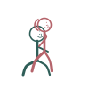

Lap Reverse
Anka Paravrtta
How to
One partner sits, the other sits on their lap facing away, back resting against their chest.
Benefits
- Hands are free to roam for the seated-behind partner
- A different angle from face-to-face positions
- Cozy and enclosed feeling
Practice
The front partner can guide the pace with their hands — a light touch is enough to signal faster or slower.

Get the Kama Sutra appFree, no ads, works offline
Google Play
General information, not medical advice. If you have a health condition or pain, talk to a doctor or qualified teacher first.